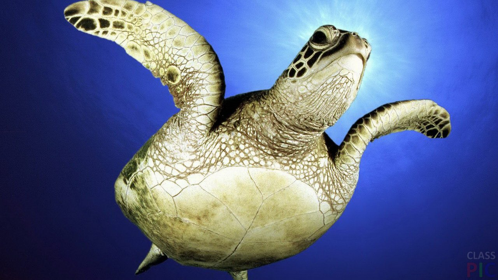

Большие регионы океанов известны как моря, заливы, проливы и т. п. Учение о земных океанах называется океанологией.
Содержание
- 1.Происхождение мирового океана
- 2.История исследования океана
- 3.Деление мирового океана
- 4.География океанов
- 5.Геология
- 6.Климат
- 7.Экология
- 8.Экономика
Происхождение Мирового океана
Происхождение Мирового океана является предметом идущих уже сотни лет споров. Считается, что в архее океан был горячим. Благодаря высокому парциональному давлению углекислого газа в атмосфере, достигавшему 5 бар, его воды были насыщены угольной кислотой Н2СО3 и характеризовались кислой реакцией (pH ≈ 3—5). В этой воде было растворено большое количество различных металлов, в особенности железа в форме хлорида FeCl2. Деятельность фотосинтезирующих бактерий привела к появлению в атмосфере кислорода. Он поглощался океаном и расходовался на окисление растворённого в воде железа. Существует гипотеза, что начиная с силурийского периода палеозоя и вплоть до мезозоя суперконтинент Пангею окружал древний океан Панталасса, который покрывал около половины земного шара.

История исследования океана
Первыми исследователями океана были мореплаватели. Во время эпохи географических открытий были изучены очертания континентов, океанов и островов. Путешествие Фернана Магеллана (1519—1522) и последующие экспедиции Джеймса Кука (1768—1780) позволили европейцам получить представление об огромных водных пространствах, окружающих материки нашей планеты, и в общих чертах определить очертания континентов. Были созданы первые карты мира. В XVII и XVIII веках очертания береговой линии были детализированы, и карта мира приобрела современный вид. Однако глубины океана были изучены очень слабо. В середине XVII столетия нидерландский географ Бернхард Варен предложил употреблять по отношению к водным пространствам Земли термин «Мировой океан». Вплоть до XIX века даже великие океанские путешественники не знали глубины океана в проплываемых местах[1]. Во время британской антарктической экспедиции 1830-х—1840-х гг. Джеймс Росс впервые придумал способ измерения океанских глубин, используя изменение скорости вытравливания лотлиня по достижении грузом дна в обычном лоте. В 1854 году появился лот Брука с отделяющимся грузом, которым в это же десятилетие Берриман (Otway H. Berryman) на судне Arctic и Дейман (Joseph Dayman) на судне Cyclops и судне Gorgon провели первые систематические измерения океанских глубин для первого трансатлантического телеграфного кабеля, что позволило М. Ф. Мори составить первую батиметрическую карту северной Атлантики[2]. 22 декабря 1872 года из английского порта Портсмута вышел парусно-паровой корвет «Челленджер», специально оборудованный для участия в первой океанографической экспедиции[3]. Современную концепцию Мирового океана составил в начале XX века российский и советский географ, океанограф и картограф Юлий Михайлович Шокальский (1856—1940). Он впервые ввёл в науку понятие «Мировой океан», считая все океаны — Индийский, Атлантический, Северный Ледовитый, Тихий — частями Мирового океана. Во второй половине XX века началось интенсивное изучение глубин океана. Методом эхолокации были составлены детальные карты глубин океана, были открыты основные формы рельефа океанического дна. Эти данные, объединённые с результатами геофизических и геологических исследований, привели в конце 1960-х годов к созданию теории тектоники плит — современной геологической теории о движении литосферы. Для изучения строения океанической коры была организована международная программа по бурению океанического дна. Одним из основных результатов программы стало подтверждение теории.
Деление Мирового океана
На сегодняшний день существует несколько взглядов на деление Мирового океана, учитывающих гидрофизические и климатические особенности, характеристики воды, биологические и другие факторы. Уже в XVIII—XIX веках существовало несколько таких версий. Мальте-Брён, Конрад Мальте-Брён и Флерье, Шарль де Флерье выделили два океана. Деление на три части предложили, в частности, Филипп Бюаш и Генрих Стенффенс. Итальянский географ Адриано Бальби (1782—1848) выделил в Мировом океане четыре региона: Атлантический океан, Северное и Южное Ледовитые моря и Великий океан, частью которого стал современный Индийский (такое деление было следствием невозможности определения точной границы между Индийским и Тихим океанами и сходством зоогеографических условий этих регионов). Сегодня нередко говорят об Индо-Тихоокеанском регионе — расположенной в тропической сфере зоогеографической зоне, в состав которой входят тропические части Индийского и Тихого океанов, а также Красное море. Граница региона проходит вдоль берегов Африки до мыса Игольного, позже — от Жёлтого моря к северным берегам Новой Зеландии, и от Южной Калифорнии к Южному тропику. Международное гидрогеографическое бюро в 1953 году разработало новое деление Мирового океана: именно тогда были окончательно выделены Северный Ледовитый, Атлантический, Индийский и Тихий океаны. В России обычно не принято выделять Южный Ледовитый океан, однако в 2000 году Международная гидрографическая организация приняла разделение на пять океанов — Атлантический, Индийский, Тихий, Южный и Северный Ледовитый. Аргументы в пользу такого решения следующие: в южной части Атлантического, Индийского и Тихого океанов границы между ними весьма условны, в то же время воды, прилегающие к Антарктиде, имеют свою специфику, а также объединены Антарктическим циркумполярным течением.
География океанов
Общие физико-географические сведения[8]: Средняя температура: 5 °C; Среднее давление: 20 МПа; Средняя плотность: 1,024 г/см³; Средняя глубина: 3711 м[источник не указан 2294 дня]; Общая масса: 1,4⋅1021 кг; Общий объём: 1370 млн км³[9]; pH: 8,1±0,2. Глубочайшей точкой океана является Марианский жёлоб, находящийся в Тихом океане вблизи Северных Марианских Островов. Его максимальная глубина — 11 022 м. Она была исследована в 1951 году британской подводной лодкой «Челленджер II», в честь которой самая глубокая часть впадины получила название «Бездна Челленджера».
Геология
Основная статья: Морская геология
Климат
Океан играет огромную роль в формировании климата Земли. Под действием солнечной радиации вода испаряется и переносится на континенты, где выпадает в виде различных атмосферных осадков. Морские течения переносят нагретые или охлаждённые воды в другие широты и в значительной мере ответственны за распределение тепла по планете. Вода обладает огромной теплоёмкостью, поэтому температура океана меняется гораздо медленнее, чем температура воздуха или суши. Близкие к океану районы имеют меньшие суточные и сезонные колебания температуры. Если факторы, вызывающие течения, постоянны, то образуется постоянное течение, а если они носят эпизодический характер, то формируется кратковременное, случайное течение. По преобладающему направлению течения делятся на меридиональные, несущие свои воды на север или на юг, и зональные, распространяющиеся широтно. Течения, температура воды в которых выше средней температуры для тех же широт, называют тёплыми, ниже — холодными, а течения, имеющие ту же температуру, что и окружающие его воды, — нейтральными. На направление течений в Мировом океане оказывает влияние отклоняющая сила, вызванная вращением Земли, — сила Кориолиса. В Северном полушарии она отклоняет течения вправо, а в Южном — влево. Скорость течений в среднем не превышает 10 метров в секунду, а в глубину они распространяются не более чем на 300 метров.
Экология
Океан является средой обитания для множества форм жизни; в их числе: рыбы китообразные, такие как киты и дельфины головоногие, такие как осьминоги, кальмары ракообразные, такие как лобстеры, креветки, криль морские черви планктон кораллы водоросли Уменьшение концентрации озона в стратосфере над антарктическими водами приводит к меньшему поглощению океаном углекислого газа[10], что угрожает кальциевым раковинам и экзоскелетам моллюсков, ракообразным и др.
Экономика
Океаны имеют громадное транспортное значение: огромное количество грузов перевозится судами между мировыми морскими портами. По цене перевозки единицы груза, на единицу расстояния, морской транспорт один из самых дешёвых, но далеко не самый быстрый. Для сокращения протяжённости морских путей построены каналы, важнейшие из которых включают Панамский и Суэцкий.